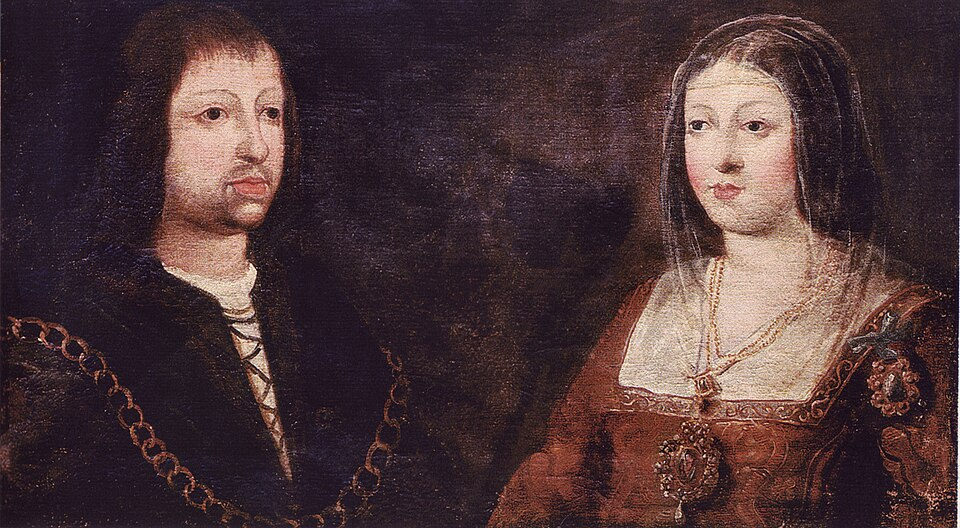

Isabel de Castilla y Fernando de Aragón se desposan casi en secreto en Valladolid
En el palacio de Juan de Vivero, la princesa Isabel, de dieciocho años, ha tomado por esposo a don Fernando, heredero de Aragón, de diecisiete. La ceremonia se ha celebrado a espaldas del rey Enrique, hermano de la novia, y en torno a ella se murmura más de lo que se proclama.

Valladolid guardaba ayer sus rumores y hoy los ve confirmados: en el palacio de Juan de Vivero, junto a la iglesia de Santa María, se han desposado esta jornada la princesa Isabel, hermana del rey don Enrique de Castilla, y don Fernando, rey de Sicilia y heredero de la corona de Aragón. La ceremonia se ha hecho con más prisa que pompa, entre puertas medio cerradas y testigos convocados casi de víspera. El arzobispo de Toledo, don Alfonso Carrillo, principal valedor del enlace, ha presidido los desposorios. La novia tiene dieciocho años; el novio, diecisiete. Ninguno de los dos ha pedido licencia al rey.
El viaje del novio hasta esta villa corre ya de boca en boca como cosa de romance. Cuentan que don Fernando entró en Castilla hace pocos días disfrazado de mozo de mulas, sirviendo la mesa de sus propios criados y durmiendo en ventas del camino, para burlar a las gentes del marqués de Villena, que vigilan pasos y puentes. La princesa, por su parte, dejó Ocaña con pretexto de visitar la sepultura de su hermano don Alfonso, y de allí se vino a Valladolid, donde la aguardaban sus partidarios. Los dos primos se vieron por primera vez hace unas noches, y se dice que se agradaron.
El enlace contraría abiertamente la voluntad del rey. Don Enrique tenía tratados otros casamientos para su hermana: el rey de Portugal, el duque de Guyena, hermano del rey de Francia. Isabel, jurada princesa heredera en los toros de Guisando hace poco más de un año, ha preferido al aragonés, y con él ha firmado capitulaciones en que don Fernando promete residir en Castilla y guardar las leyes y fueros de estos reinos. Detrás del desposorio están la mano del arzobispo Carrillo y el interés de la casa de Aragón, que el viejo rey don Juan persigue desde hace años: unir su sangre a la heredera castellana.
No todo son parabienes en Valladolid. Los novios son primos segundos, y para casarse necesitan dispensa del Papa; se ha leído una bula que la otorga, pero se murmura, aun entre gentes de iglesia, sobre su procedencia y su fecha, y no falta quien diga en voz baja que Roma nada ha firmado todavía. Tampoco hay tesoro que luzca: se cuenta que hubo que pedir prestado para pagar los festejos, y que el collar que el novio envió a su prometida venía empeñado de antemano. Boda de príncipes con bolsa de estudiantes, dicen con sorna los corrillos de la villa.
Queda por ver cómo recibe el rey la nueva, y si Castilla, tan castigada de banderías, no añade a sus males una querella más. Pero conviene mirar más lejos: si Dios da vida y sucesión a estos esposos, un mismo techo cobijará algún día las coronas de Castilla y de Aragón, que juntas pesan más que ninguna otra en las Españas. Dos reinos que podrían volverse uno: eso se ha desposado hoy en el palacio de los Vivero, aunque la ceremonia haya sido callada y la dispensa dudosa. Los grandes sucesos, a veces, entran por la puerta de servicio, vestidos de mozo de mulas.